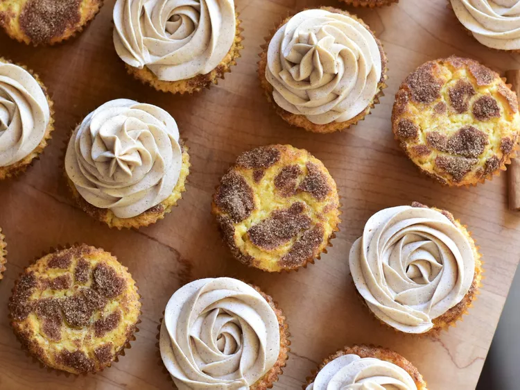

Snickerdoodle Cupcakes
Snickerdoodle Cupcakes with Cinnamon Buttercream Frosting

Ingredients
Cupcakes
- White sugar
- Ground Cinnamon
- All-purpose flour
- Baking powder
- Cream of Tartar
- Salt
- Baking Soda
- Unsalted butter
- Large Egg
- Vanilla Extract
- Buttermilk
Frosting
- Unsalted butter
- Powdered sugar
- Vanilla Extract
- Ground cinnnamon
- Salt
- Heavy cream
Steps
- Preheat the oven to 350 degrees F (175 degrees C). Line 18 cupcake cups with liners.
- Mix together 1/3 cup sugar and cinnamon for cupcakes in a small bowl. Set aside.
- Whisk together flour, baking powder, cream of tartar, salt, and baking soda in another bowl until combined.
- Cream together butter and 1 cup sugar in a large bowl until light and fluffy, 2 to 3 minutes. Add in egg
and vanilla and mix an additional 2 minutes. Pour in half of the flour mixture and mix until just combined.
Pour in buttermilk and mix until just combined. Add in remaining flour mixture and mix until just combined.
- Place 1 tablespoon of batter in the bottom of each cupcake liner. Sprinkle 1/2 teaspoon of cinnamon-sugar
over the batter. Add another heaped 1 tablespoon of batter on top. Sprinkle with an additional 1/2 teaspoon
cinnamon-sugar mixture. Repeat layering in each cupcake liner.
- Bake in the preheated oven until cupcakes spring back lightly when touched, 24 to 28 minutes. Allow to cool
for several minutes in the pan before removing to a wire rack to cool completely.
- For the frosting: Beat butter on high speed until lightened in color, about 2 minutes. Add in powdered sugar
1 cup at a time, mixing well after each addition. Mix in vanilla, cinnamon, and salt. Add in heavy cream and
beat until frosting is light and fluffy, an additional 2 to 3 minutes. Frost cooled cupcakes as desired.